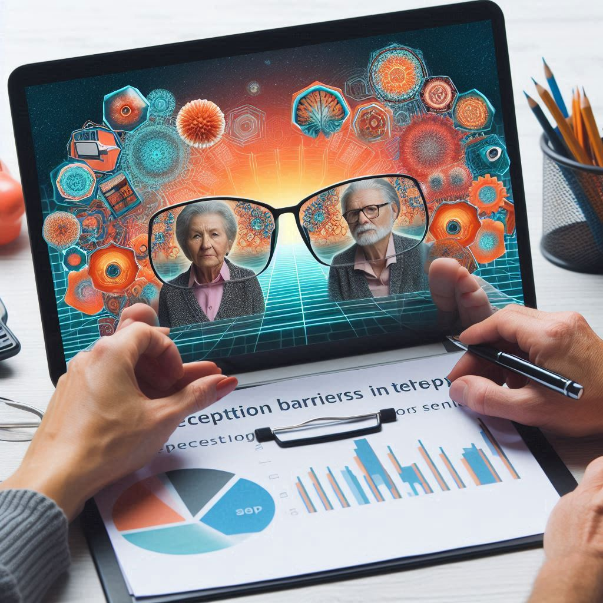

Percepción de Barreras en la Telepsicología para Personas Mayores
Autores:
Carolina Ríos Palacio & Verónica Córdoba Sánchez
Publicado en:
Psicoespacios, Vol. 18, Nº 33 (2024).
¿Por qué es importante?
El envejecimiento poblacional es una realidad global. Según la OMS, para 2050, el 22% de la población mundial tendrá más de 60 años. En Colombia, este grupo ya enfrenta desafíos en el acceso a servicios de salud mental, especialmente con la telepsicología, una herramienta que se popularizó durante la pandemia pero que no siempre es inclusiva.
Hallazgos clave:
- Las personas mayores asociaban la telepsicología solo con llamadas telefónicas, desconociendo otras plataformas.
- Experimentaron barreras como dificultad en el manejo de aplicaciones, dependencia de terceros y percepción de poca empatía en las consultas virtuales.
- Aunque valoraron la comodidad y el ahorro de desplazamientos, señalaron falta de privacidad y contacto visual como desventajas.
Este estudio cualitativo exploró las percepciones de 12 personas mayores en Colombia sobre la telepsicología. Los participantes, usuarios de consultorios psicológicos comunitarios, destacaron dificultades como el manejo de tecnología, la dependencia de familiares para acceder a las sesiones y la sensación de menor conexión emocional en comparación con las consultas presenciales.
Aunque valoraron la reducción de costos y desplazamientos, señalaron que la falta de privacidad y el contacto visual limitado afectaban su experiencia.
La telepsicología llegó para quedarse, pero no puede ser una solución única si excluye a quienes más la necesitan. Las personas mayores no solo enfrentan brechas digitales, sino también estereotipos que asumen que "no pueden aprender". Urge diseñar herramientas intuitivas y capacitar a los profesionales en gerontología digital.
Datos clave:
- Según la OMS, el 60% de los adultos mayores en América Latina no usan internet, lo que profundiza su aislamiento en la era digital.
- Un estudio de la APA (2020) reveló que el uso de telepsicología aumentó 26 veces en psicólogos ambulatorios durante la pandemia, pero solo 7 veces en centros médicos para veteranos, evidenciando una brecha generacional.